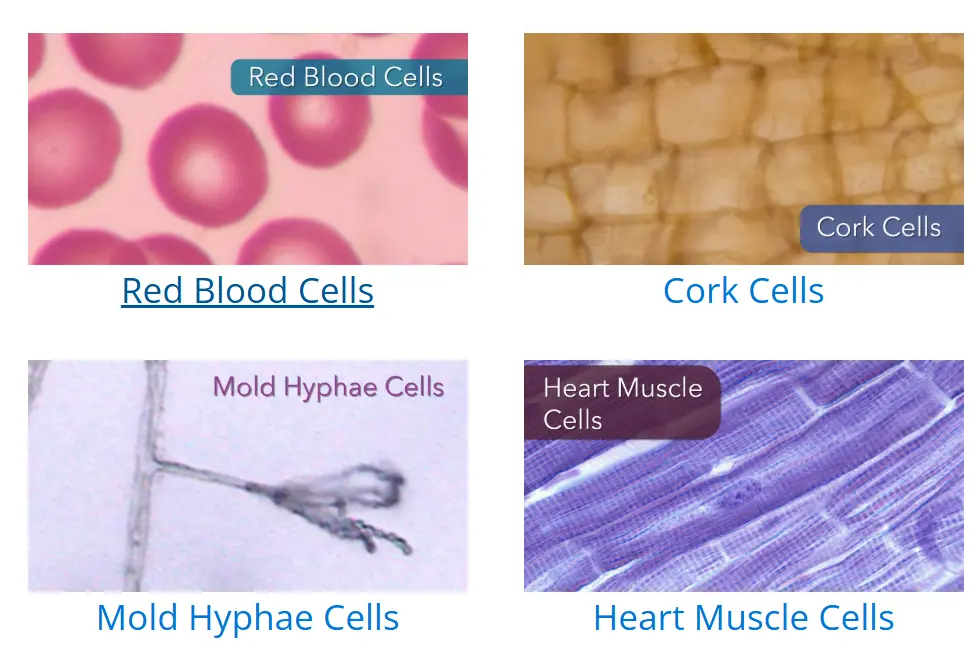
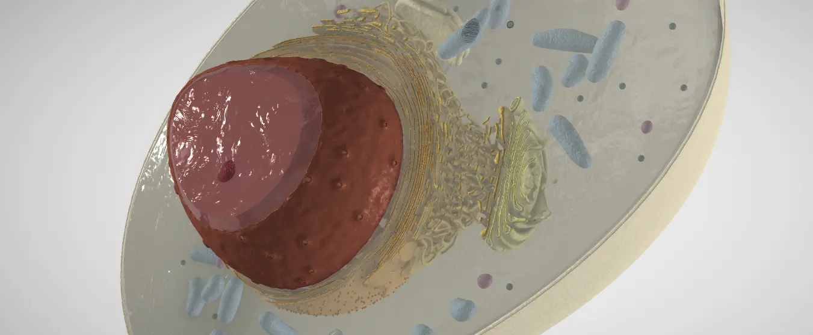
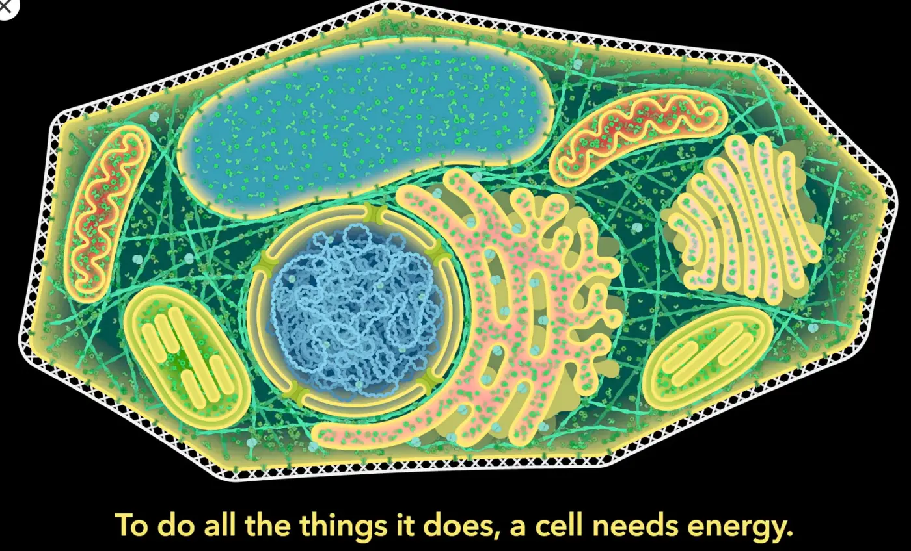
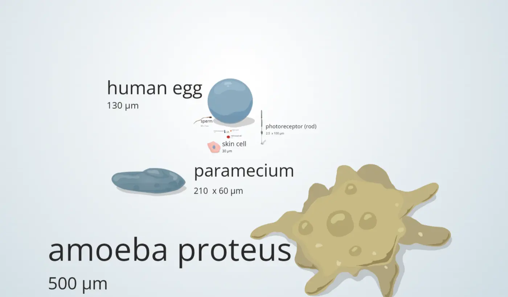
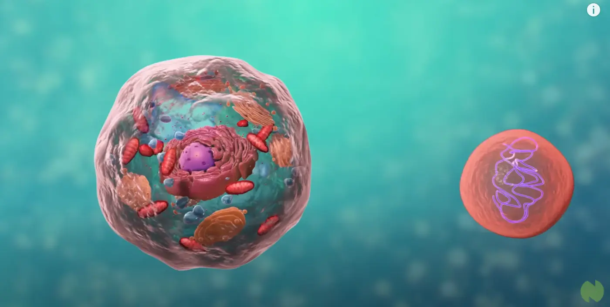
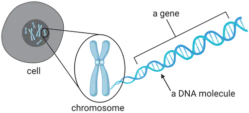
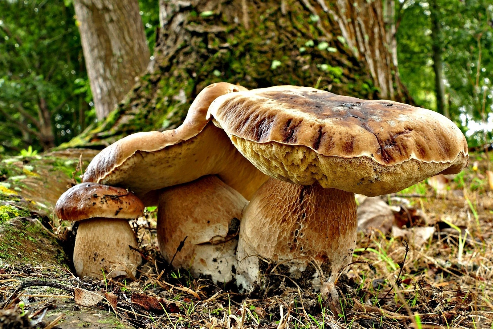

What you need to know (specification)
- 2.2describe cell structures, including the nucleus, cytoplasm, cell membrane, cell wall, mitochondria, chloroplasts, ribosomes and vacuole
- 2.3describe the functions of the nucleus, cytoplasm, cell membrane, cell wall, mitochondria, chloroplasts, ribosomes and vacuole
- 2.4know the similarities and differences in the structure of plant and animal cells
What are cells? 2.2
- All living organisms are made of cells.
- The simplest organisms are made of one cell (unicellular).
- Multicellular organisms such as animals and plants are more complex: different cells are specialised to do particular jobs.
- Inside cells are smaller structures called organelles, each with a specific function.
Red blood cells: Scootdive (talk · contribs), CC BY-SA 3.0 · source · Nerve cells: Tulemo, CC BY-SA 4.0 · source · Moss cells: Andrei Savitsky, CC BY 4.0 · source

InteractiveGallery of real cellslearn.genetics.utah.edu ↗
SimulationExplore a 3D cellcell.effigos.com ↗
InteractiveInside a cell: videoslearn.genetics.utah.edu ↗
InteractiveCell size and scalelearn.genetics.utah.edu ↗ VideoHow big are cells?youtube.com ↗
VideoHow big are cells?youtube.com ↗
VideoOrganellesyoutube.com ↗Quick check
0 / 2 done1. What is the main difference between eukaryotic cells (animals, plants, fungi) and prokaryotic cells (bacteria)?
2. Which kingdom is prokaryotic?
Animal and plant cells 2.2
Animal cell
Plant cell
These are generalised cells: they show the main parts. Real cells vary in shape and size.
Quick check
0 / 2 done1. Which three structures are found in plant cells but NOT in animal cells?
2. Do plant cells contain mitochondria?
What each part does 2.3
Nucleus
- Contains the genetic information and controls the cell’s activities
- Genetic information is in chromosomes, made of DNA
- Cells with a nucleus are eukaryotic. Bacteria have no nucleus: prokaryotic

Cell membrane
- Controls what enters and leaves the cell
- Partially permeable: only some substances can pass through
Cytoplasm
- Jelly-like liquid that holds the organelles and enzymes
- Where most of the cell’s chemical reactions happen: metabolic reactions
Mitochondria
- Where aerobic respiration happens, releasing energy
- Cells that need lots of energy, like muscle cells, have many
Ribosomes
- Very small, found in the cytoplasm
- Make proteins (protein synthesis)
Chloroplasts plant cells only
- Contain chlorophyll, a green pigment
- Absorb light energy to make food by photosynthesis
Cell wall plant cells only
- Made of cellulose: strengthens the cell and keeps its shape
- Freely permeable: substances pass through easily

Mushroom: Bernard Spragg. NZ, CC0 · source
Vacuole plant cells only
- Filled with cell sap: water, dissolved sugars and mineral ions
- Keeps the cell firm, which helps support the plant
 VideoInside plant cellsyoutube.com ↗
VideoInside plant cellsyoutube.com ↗
Examiner warnings — Exact functions
- Cell membrane controls what enters and leaves the cell — NOT the cell wall (the cell wall gives strength and support!).
- Mitochondria are the site of aerobic respiration (releasing energy) — never write "makes energy".
- Ribosomes are the site of protein synthesis.
Quick check
0 / 2 done1. Which organelle is the site of protein synthesis?
2. What is the function of the cell wall in a plant cell?
Comparing animal and plant cells 2.4
| Part | Animal cell | Plant cell |
|---|---|---|
| Nucleus | ✓ | ✓ |
| Cell membrane | ✓ | ✓ |
| Cytoplasm | ✓ | ✓ |
| Mitochondria | ✓ | ✓ |
| Ribosomes | ✓ | ✓ |
| Chloroplasts | ✗ | ✓ |
| Cell wall | ✗ | ✓ |
| Permanent vacuole | ✗ | ✓ |
Key idea
Both have a nucleus, cell membrane, cytoplasm, mitochondria and ribosomes. Only plant cells have chloroplasts, a cellulose cell wall and a large permanent vacuole.
Worked example — Root hair cell vs palisade leaf cell
- Both are plant cells, so both have a cellulose cell wall, vacuole, nucleus, cytoplasm, membrane, mitochondria and ribosomes.
- Key difference: Root hair cells grow underground in the dark, so they have NO chloroplasts!
Now you try: why does a muscle cell have far more mitochondria than a skin cell?
Muscle cells need lots of energy to contract, so they contain many mitochondria for a high rate of aerobic respiration.
Quick check
0 / 2 done1. Why do root hair cells NOT contain chloroplasts?
2. What is the plant cell wall made of?
Specialised cells
These generalised cells show the main features, but most cells in plants and animals are specialised to do a particular job. You will meet these later in the course:
Practice
True or false?
Ribosomes make proteins.
Aerobic respiration takes place in the mitochondria.
The plant cell wall is made of chitin.
The cell membrane is freely permeable.
The cytoplasm is where many metabolic reactions take place.
Chlorophyll contains chloroplasts.
Organelles are larger than cells.
Exam-style question: complete the table [6]
| Organelle | Function | Plant or animal cell |
|---|---|---|
| Mitochondria | …… | Both |
| …… | Protein synthesis | Both |
| …… | Photosynthesis | …… |
| …… | Controls what enters and leaves the cell | …… |
Summary: every part
| Part | Function | Plant or animal cell |
|---|---|---|
| Mitochondria | (Aerobic) respiration: releases energy | Both |
| Ribosome | Protein synthesis | Both |
| Chloroplast | Photosynthesis | Plant |
| Cell membrane | Controls what enters and leaves the cell | Both |
| Cytoplasm | Jelly-like liquid that fills the cell; many of the cell’s chemical reactions happen here | Both |
| Cell wall | Made of cellulose; strengthens the cell and supports it | Plant |
| Nucleus | Contains genetic material (DNA) that controls the cell’s activities | Both |
| Vacuole | Filled with cell sap; helps keep the cell’s shape | Plant (permanent) |
 GameAnimal and plant cells gamewordwall.net ↗
GameAnimal and plant cells gamewordwall.net ↗ QuizKahoot: cells, tissues and movement of substances (2a, 2b, 2d)create.kahoot.it ↗
QuizKahoot: cells, tissues and movement of substances (2a, 2b, 2d)create.kahoot.it ↗Quick check
0 / 2 done1. How is a red blood cell adapted to carry maximum oxygen?
2. How is a root hair cell adapted to absorb water and minerals?
End-of-topic test
Test yourself without looking back! Answer the multiple-choice questions, write your own long answers, then check the mark schemes.
Diagram questions
Click an answer, then press ↻ Another example to generate a fresh cell diagram.